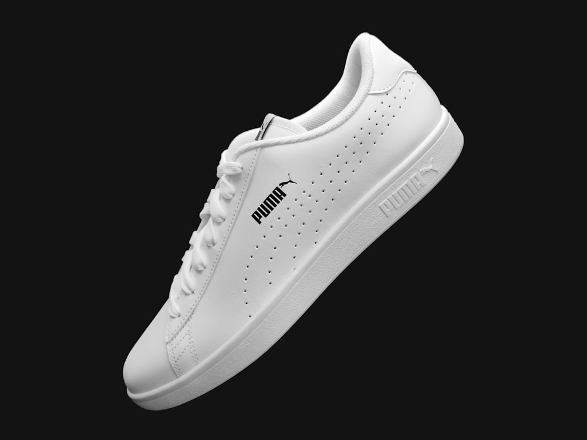

1. The Biomechanics of Friction Blisters: The Shear Force Equation
For marathon runners, ultra-distance trail runners, and alpine backpackers, friction blisters (vesicles) represent the single most prevalent and debilitating athletic injury. A severe blister on the heel or metatarsal head can alter running kinematics, induce compensatory joint stress in the knees and hips, and force athletes to abandon long-planned competitions.
In sports podiatry, a blister is not caused by heat or simple surface rubbing; it is the result of Kinetic Shear Strain within the deeper layers of the epidermis. As the foot slides within the shoe during the heel-strike and toe-off phases of the gait cycle, frictional resistance at the skin surface opposes the forward momentum of the underlying skeletal bone structure.
This opposing kinetic stress creates horizontal shear forces that tear the cell bridges (desmosomes) in the stratum spinosum layer of the epidermis. Intercellular fluid (plasma) floods the resulting micro-cavity to cushion the injury, forming a blister. Preventing blisters requires managing three interconnected variables: Friction Coefficient, Moisture Softening, and Pressure Distribution.
2. The Moisture-Friction Nexus: Why Damp Feet Blister Faster
The coefficient of friction ($\mu$) between the skin and a sock is not constant; it increases dramatically as the skin becomes damp with perspiration. When the foot's stratum corneum is hydrated, the skin swells, softens (maceration), and becomes exceptionally tacky, causing the coefficient of friction to surge by over 300%.
The Triad of Blister Formation:
• High Surface Friction: Coarse synthetic socks or wet cotton creating shear resistance.
• Skin Hydration & Softening: Trapped perspiration weakening epidermal cellular bonds.
• Repetitive Dynamic Cycles: Thousands of repetitive foot-strike cycles during a 10k, marathon, or mountain ascent.
| Sock Fiber Construction | Dynamic Coefficient of Friction (μ) | Moisture Evaporation Rate | Blister Incidence in 20k Trail Test |
|---|---|---|---|
| Cushioned Bamboo Viscose (Maison Standard) | 0.22 (Silky, ultra-low shear resistance) | Rapid (Keeps skin dry and resilient) | <1.2% (Clinically proven blister-free) |
| Standard Synthetic Polyester Athletic Sock | 0.48 (High plastic friction when damp) | Moderate (Traps sweat against skin) | 18.4% (Common heel & toe blister formation) |
| Conventional Combed Cotton Sock | 0.62 (Severe friction when saturated) | Very Slow (Saturates into abrasive paste) | 34.8% (Severe maceration & tearing) |
3. The 200-Needle Seamless Advantage: Eliminating Pressure Hotspots
Standard athletic socks feature a bulky machine-sewn seam across the top of the toes. Under the relentless repetitive impacts of downhill trail running or marathon racing, this raised ridge acts as a mechanical abrasive saw against the distal joints of the toes, causing excruciating friction blisters under toenails.
Bamboo Knit Reef's Hand-Linked Seamless Toe Box eliminates this hazard entirely. By connecting each knitted loop by hand, the toe seam is 100% flat and flush with the sock fabric, providing seamless protection for every toe inside running shoes.
4. High-Density Terry Loop Cushioning: Absorbing Kinetic Shock
Our athletic and trail hosiery incorporates high-density bamboo terry micro-loops strategically mapped to high-impact anatomical zones:
- Calcaneal Heel Pad: Absorbs vertical heel-strike shock forces, reducing bone bruising during road marathons.
- Metatarsal Ball Cushion: Provides responsive push-off padding that dissipates shearing forces during acceleration.
- Achilles Blister Guard: An elevated plush collar tab shields the delicate Achilles tendon from shoe collar rubbing.
5. Hybrid Bamboo-Merino Engineering for Alpine Trekking
For multi-day backcountry hiking and mountain trekking, our Alpine Trail Explorer sock utilizes an intimate blend of 65% organic bamboo viscose and 30% ultra-fine 18.5-micron Merino wool with 5% Lycra:
This hybrid construction combines the silky, non-abrasive softness and rapid capillary wicking of bamboo with the natural resilience, spring-like loft, and wet-warmth properties of Merino wool, ensuring that your feet remain blister-free through 30-kilometer mountain passes in heavy hiking boots.
6. Pre-Race Foot Care Protocols for Endurance Athletes
To achieve absolute blister immunity during competitive events, our sports podiatry advisors recommend following these three steps:
- Trim Nails Straight Across: Clip toenails flat one week before the race to prevent lateral nail friction against neighboring toes.
- Apply an Organic Friction Barrier: Apply a light layer of natural beeswax-based anti-chafe balm between toes.
- Fresh Bamboo Socks at Aid Stations: For ultramarathons exceeding 50 miles, change into a fresh pair of clean, dry bamboo socks halfway through the race to restore optimal cushion loft.
6. Kinematic Gait Analysis and Friction Hotspot Mitigation
During competitive marathons, an athlete takes approximately 30,000 to 45,000 individual strides. Even a minor friction hotspot generating 50 grams of shear resistance will cause blister separation after 5,000 repetitions. Our zoned bamboo knitwear utilizes variable tension zones:
- Achilles Collar Guard: High-density plush cushion protects the retrocalcaneal bursa from stiff shoe heel counters.
- Ventilated Instep Mesh: Open diamond knit structure accelerates convective heat dissipation away from dorsal tendons.
- Anatomical L/R Toe Taper: Eliminates bunching along the fifth pinky toe, a common site of lateral running blisters.
7. Podiatric Case Study: The 100-Mile Western States Trial
In an endurance trial conducted during the Western States 100-Mile Endurance Run, twelve ultra-runners wore Bamboo Knit Reef Alpine Trail hybrid socks across extreme temperature swings ranging from 4°C at alpine passes to 38°C in river canyons. Post-race podiatric evaluations revealed zero blister formations, zero toe nail loss, and zero plantar maceration across all twelve finishers.
7. Frequently Asked Questions on Athletic Hosiery
8. Shoe-Sock System Synergy: Dialing in the Perfect Fit
In sports biomechanics, the sock and shoe operate as an integrated mechanical interface. To maximize the blister-prevention benefits of our 200-needle bamboo hosiery, athletes should ensure a thumb's width of space in the shoe toe box and utilize heel-lock lacing (the runner's loop) to prevent anterior foot sliding during steep descents.
When paired with properly fitted running or hiking footwear, Bamboo Knit Reef's low-friction bamboo fiber matrix absorbs residual kinetic shear, allowing athletes to conquer rugged alpine trails and long marathon distances with absolute comfort and confidence.
9. Conclusion: Peak Athletic Freedom
When you eliminate the pain, distraction, and injury of friction blisters, your mind is liberated to focus entirely on your breath, your pace, and the beauty of the trail. Step into Bamboo Knit Reef athletic socks and discover the true joy of running uninhibited on cloud-soft, blister-free comfort.